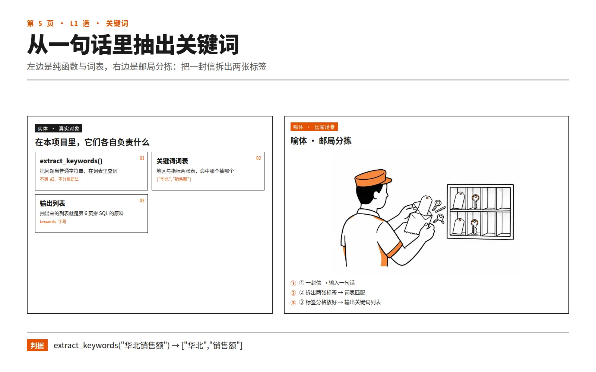
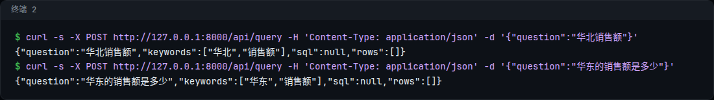

练本 · 阅读版（md 正典派生，改内容请改 tutorial/page-05.md）
第 5 页 · 从一句话里抽出关键词
城市坐标 · P5 前台接待台（交付物 ⑦）｜窗口后的接待员：把一句话拆成「地区 + 指标」两把钥匙。
前置：第 0 页备好环境；本页接第 4 页留下的 lab/app.py 与 8000 端口的服务。
这一页构建什么
一个纯函数 extract_keywords(question)：把问题当普通字符串，在你写好的词表里查“问题里出现了哪个词”，抽成一个列表。
不调 AI、不分析语法，只做字符串匹配；抽出来的列表就是第 6 页拼 SQL 的原料。

猜一猜
动手前写下答案：把问题换成 {"question": "华东的销售额是多少"}，keywords 里会有几个词？分别是哪几个？
"的"、"多少" 会出现在列表里吗？
动手
先删后贴：要改的文件是 lab/app.py：先全选删掉旧代码，再把整段粘贴进去（不要往后追加：追加虽然不报错，但会留下重复的 import、app = FastAPI() 和路由定义）。
保存再重启：改完先按 Ctrl+S 保存，再回终端 1 重启；不保存就重启，服务还在跑旧代码（实测两次 keywords 都是 []，跟下面的期望输出完全不同）。
- 把
lab/app.py整个替换成下面这段（第 4 页的代码全部删掉，不要留）：
# lab/app.py —— 从问题里抽关键词（纯字符串规则，不用 AI）
from fastapi import FastAPI
from pydantic import BaseModel
app = FastAPI()
REGIONS = ["华北", "华东", "华南", "西南", "华中"]
METRICS = ["销售额", "订单量"]
class Query(BaseModel):
question: str
def extract_keywords(question: str) -> list[str]:
keywords = []
for word in REGIONS + METRICS:
if word in question:
keywords.append(word)
return keywords
@app.get("/health")
def health():
return {"ok": True}
@app.post("/api/query")
def query(q: Query):
keywords = extract_keywords(q.question)
return {
"question": q.question,
"keywords": keywords,
"sql": None,
"rows": [],
}
- 回终端 1 按 Ctrl+C 停掉，再用第 3 页那条命令原样重启：
system/backend/.venv/bin/python -m uvicorn lab.app:app --port 8000
- 在终端 2 发两个请求：一个短的，一个更长的（带一些跟查询无关的字；端口沿用你第 3 页实际启动的那个，默认
8000）：
curl -s -X POST http://127.0.0.1:8000/api/query -H 'Content-Type: application/json' -d '{"question":"华北销售额"}'
curl -s -X POST http://127.0.0.1:8000/api/query -H 'Content-Type: application/json' -d '{"question":"华东的销售额是多少"}'
你应该看到
{"question":"华北销售额","keywords":["华北","销售额"],"sql":null,"rows":[]}
{"question":"华东的销售额是多少","keywords":["华东","销售额"],"sql":null,"rows":[]}

对账
- 你猜对了吗？两个词：
华东、销售额。的、多少没进去——它们不在词表里，if word in question对它们不成立。 in是子串包含：只要那句话里出现了“销售额”这三个字就算命中，前后多几个字不影响结果。所以“华东的销售额是多少”和“华北销售额”抽出来的指标是同一个。- 再看顺序：代码按
REGIONS + METRICS的顺序扫，地区永远排在指标前面，跟你问题里谁先出现无关；REGIONS的排列顺序本身无意义，和契约values的顺序不同不算矛盾。 - 规则很笨，但可预测：同一个问题永远抽同一组词，你能对着输出逐字核对。这一页不用 AI，就是为了让“抽词”这一步能被你验算。
你现在拥有：一个把问题压成关键词列表的纯函数
extract_keywords(question)；它是第 6 页拼 SQL 的原料来源，也是整条问答链路里你能逐字验算的第一步。
自己改一下
- 把问题换成
{"question": "昨天天气怎么样"}发一次，看keywords是不是[]。（参考："keywords":[]——句子不含词表里的任何词。） - 再把
METRICS里两个词对调位置，重启，发{"question": "华北销售额和订单量"}——列表里两个指标的顺序变了吗？ （参考：变了，变成["华北","订单量","销售额"]；扫描顺序跟着METRICS走，与问题里谁先出现无关。） - 验完把
METRICS改回["销售额", "订单量"]再进第 6 页——后面几页按原顺序假设。